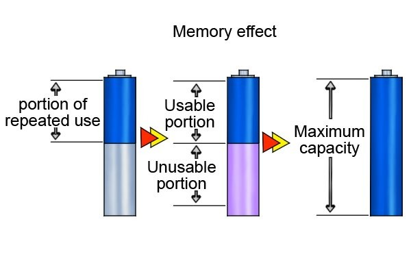
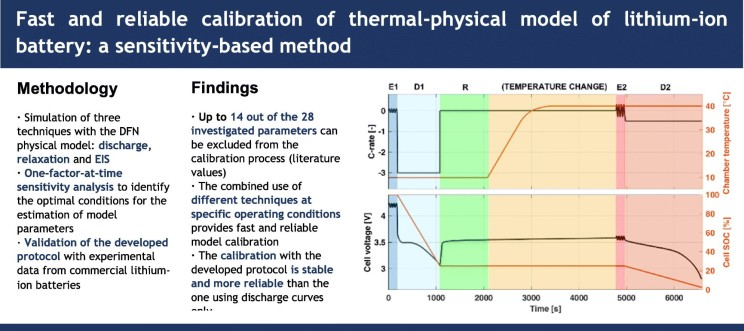
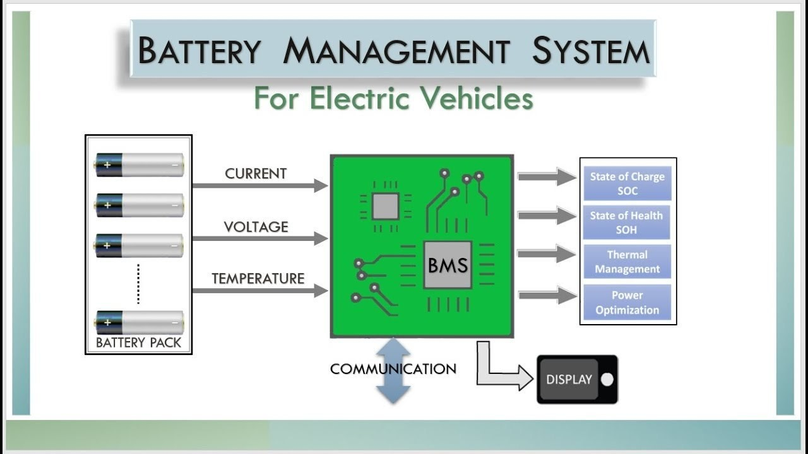

Introduction
Have you ever been told to charge your new phone or laptop battery for 12 hours before using it? This advice has been around for decades, but when it comes to lithium-ion batteries, it's nothing more than a myth. The truth is, modern lithium-ion batteries don’t need a 12-hour activation charge. So, where did this misconception come from? And more importantly, how should you really take care of your battery? Let’s break it all down.
What Is Lithium Battery Activation?
"Activation" suggests that a battery needs a long initial charge to reach its full capacity. While this might have been true for older battery technologies, lithium-ion batteries operate differently. They don’t require activation because they’re already optimized at the factory.
The Origin of the 12-Hour Charging Myth
This misconception dates back to nickel-based batteries (Ni-Cd and Ni-MH), which suffered from the "memory effect." These batteries needed long charging cycles initially to prevent capacity loss. Over time, this advice wrongly carried over to lithium-ion batteries, even though they work on a completely different principle.

How Lithium-ion Batteries Actually Work
Unlike older battery technologies, lithium-ion batteries don’t have a memory effect. They’re designed to work efficiently from the moment you start using them. In fact, lithium-ion batteries come partially charged from the factory and are ready for use right away.
Impact of Overcharging on Lithium Batteries
Leaving your battery plugged in for long periods can actually be harmful. While most devices have protection circuits, excessive charging can cause minor wear over time. Instead of a 12-hour charge, it’s best to follow the manufacturer’s recommended charging practices.
Optimal Charging Practices for Lithium Batteries
To maximize battery life, follow these best practices:
- Avoid letting the battery drain completely.
- Keep the charge level between 20% and 80% for optimal longevity.
- Use a high-quality charger that matches the recommended voltage and amperage.
Understanding Battery Calibration vs. Activation
While activation is a myth, battery calibration is a real concept. Calibration helps your device accurately estimate battery percentage. To calibrate, let the battery drain completely once in a while, then fully recharge it. However, this should only be done occasionally, not as a routine.

Why Manufacturers Don’t Recommend the 12-Hour Charge
Tech companies like Apple, Samsung, and Tesla have confirmed that lithium-ion batteries do not need a long first-time charge. Their user manuals clearly state that the devices can be used immediately after unboxing.
The Role of Battery Management Systems (BMS)
Modern batteries include a Battery Management System (BMS) that prevents overcharging and overheating. Smart charging features ensure that once a battery reaches 100%, it stops drawing power, making prolonged charging unnecessary.

Common Lithium Battery Myths and Facts
- Myth: You must charge a new battery for 12 hours.
- Fact: Lithium batteries are pre-charged and ready to use.
- Myth: Keeping your battery plugged in overnight damages it.
- Fact: Most modern devices have built-in protection against overcharging.
- Myth: Fully discharging your battery often improves longevity.
- Fact: Frequent deep discharges can actually shorten battery life.
Future of Lithium-ion Batteries
Battery technology is evolving rapidly. Advancements like solid-state batteries will further improve efficiency and eliminate concerns about charging practices. The key takeaway? Myths like the 12-hour charge will become irrelevant as technology progresses.
Conclusion
The belief that lithium-ion batteries require a 12-hour activation charge is outdated and incorrect. These batteries are designed for efficiency and don’t need lengthy first-time charges. By following manufacturer recommendations and proper charging habits, you can ensure your battery lasts longer without unnecessary rituals.